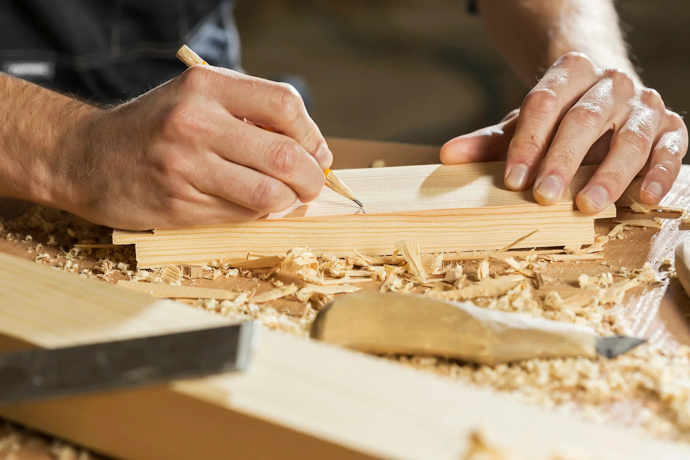
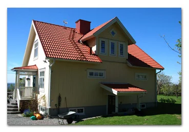
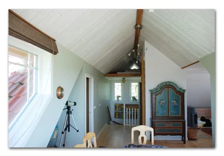
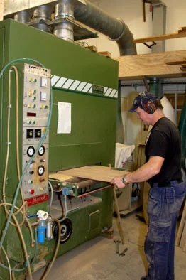
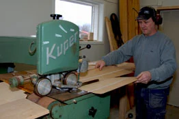
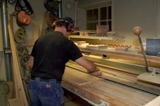

Vi träffas.
Vi tittar på platsen och pratar om dina idéer. Ett första besök och kostnadsförslag är kostnadsfritt.
 070-31 617 69Prata med Lars
070-31 617 69Prata med Lars
Från husets stora förändringar till det lilla
som gör hela skillnaden. Vi bygger din idé.
Ett byggföretag. Ett eget snickeri.
Många möjligheter.
Hos LR Bygg möts byggkunskap och känslan för trä. Vi bygger nytt, tar hand om det befintliga och tillverkar det som behöver passa precis.
Du har direktkontakt med Lars Röstedal, som startade företaget 1990. Välkommen med både små idéer och stora planer.
Möt LR ByggBygg och tillverkning samlat på ett ställe.
Välj det du är nyfiken på.
Ett nytt hus, en tillbyggnad eller plats för verksamheten. Vi hjälper dig att göra byggplanerna konkreta.

Från tak och fönster till kök och badrum. Förändringar som ger huset nytt liv.

Personligt inredningssnickeri, måttbeställda kök och serietillverkning för företag.

Vissa saker blir bättre
när de görs för hand.
Och efter dina mått.
I vårt snickeri tillverkar vi bland annat kök och specialanpassade detaljer. En del virke sågas och hyvlas i egen regi. Det ger närhet till materialet genom arbetet.
Kliv in i snickeriet

Vi tittar på platsen och pratar om dina idéer. Ett första besök och kostnadsförslag är kostnadsfritt.
Tillsammans går vi igenom lösning, material och omfattning. Du vet vad vi kommit överens om.
Bygg och snickeri med omsorg om helheten. Vi håller kontakten tills arbetet är färdigt.
Ring Lars på 070-31 617 69 eller mejla lars@lrbygg.com. Berätta vad du vill göra och var projektet finns, så tar vi nästa steg tillsammans.
Ja, vi erbjuder ett kostnadsfritt besök och kostnadsförslag. Kontakta oss för att komma överens om en tid.
Ja. Vi har eget snickeri och arbetar bland annat med måttbeställda kök, specialsnickerier och legotillverkning. Skicka gärna en skiss eller mått som underlag.
Det beror på arbetets omfattning och förutsättningar. Vi går igenom upplägg och pris innan start och kan avtala om fast pris för lämpliga projekt.
Berätta för Lars. Vi börjar med ett kostnadsfritt
besök och ett förslag för ditt projekt.